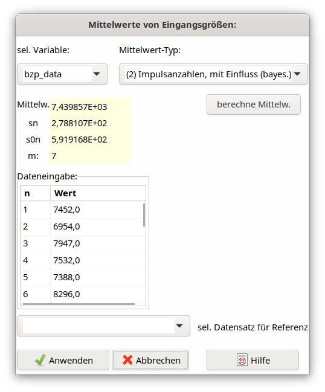

4.9. Verwendung von Datensätzen für Mittelwert und Varianz¶
4.9.1. Mathematischer Hintergrund¶
Die hier verwendeten Formeln für Mittelwert und Varianz basieren auf der Bayesstatistik. Ihre Herleitung wurde im Kapitel 5.8 und im Anhang C der Publikation von Weise et al. (2013) erläutert. Es wird zwischen zwei Fällen a) und b) unterschieden (siehe auch Verfahren A und B in Tabelle 2 des Bruttogröße: Varianzinterpolation für einen Mittelwert):
Unbekannte zufällige Einflüsse:
Mean type 1. For any input quantity \(x\), which does not represent a number of counts, the variance of m individual values is derived from the experimental variation:
Herein are:
Mean type 2. An input quantity n represents a number of counts and is influenced by an additional variation, e.g., due to repeated sampling and/or chemical analysis, which enlarges the Poisson-derived variance. A normal distribution with parameters \(\mu\) and \(\sigma^{2}\) is assumed for this influence. The variance of the mean is then given by:
(4.9.3)¶\[u^{2}\left( \overline{n} \right) = \frac{1}{m}\left( \overline{n} + \frac{(m - 1)}{(m - 3)}{(\overline{n} + s}_{n}^{2}) \right) = \frac{1}{m}(\overline{n} + E(S^{2},\mathbf{n}))\]\(\overline{n}\ \) and \(s_{n}^{2}\) are calculated analogue to \(\overline{x}\ \) and \(s_{x}^{2}\). The variance component
(4.9.4)¶\[E\left( S^{2},\mathbf{n} \right) = \frac{(m - 1)}{(m - 3)}{(\overline{n} + s}_{n}^{2})\]als bester Schätzwert für den Parameter \(\sigma^{2}\) der beteiligten Normalverteilung betrachtet. Der erste Term in der Klammer von Gl. (4.9.2), \(\overline{n}\), stellt den Poisson-bezogenen Teil der Varianz dar.
Die Anwendung dieser Formeln führt zu dem überraschenden Resultat, dass eine Varianz nur berechnet werden kann, wenn mehr als 3 Einzelwerte vorliegen.
Mittelwert-Typ 3. Für Vergleichszwecke kann die klassische Formel für die Standardabweichung des Mittelwerts verwendet werden,
und zwar dann, wenn als Mittelwerttyp „klassisch” verwendet wird.
Bekannte zufällige Einflüsse
Wenn der Anteil von (4.9.4) an (4.9.3) relativ klein ist, wird ein Parameter \(\vartheta\) definiert:
\(\vartheta^{2} = E\left( S^{2},\mathbf{n} \right)/{\overline{n}}^{2}\)
Dann wird aus Gl. (4.9.4):
Durch Auflösen der Gl. (4.9.4) nach \(\vartheta^{2}\) erhält man eine Gleichung, mit der \(\vartheta^{2}\) aus einer Reihe von Messungen an einer Referenzprobe \(r\) ermittelt werden kann:
Der Parameter \(\vartheta\) soll kleiner als etwa 0,2 sein.
4.9.2. Anwendung von Mittelwerten in UncertRadio¶
Wird in der Symbolliste im TAB “Gleichungen” der Symboltyp einer Größe von „a” oder „u” in „m” geändert, erwartet das Programm, dass Wert und Unsicherheit dieser Größe aus einem noch einzugebenden Datensatz ermittelt werden sollen. Diesem Zweck dient der folgende Dialog, der mit dem Icon aus der Toolbar aufgerufen wird (es verlangt zuvor die Zeile der „m”-Variable im TAB “Values, Uncertainties” zu selektieren):

Abb. 4.9.1 Dialog for variable average¶
Die Bezeichner der Datensätze sind hier schon voreingestellt. Im gezeigten Dialog ist ref_data (gehörend zur Eingangsgröße ref) für die Dateneingabe ausgewählt. Außerdem kann der Typ des Mittelwerts und seiner Varianz nach den Gleichungen (4.9.1) und (4.9.3) gewählt werden. Für den Extremfall, dass höchstens 3 Einzelwerte vorliegen oder die Daten im klassischen Sinne ausgewertet werden sollen, kann als dritte Option die Varianz nach Gl. (4.9.5) gewählt werden; Letztere ist auch für mehr als 3 Einzelwerte verwendbar. Im gezeigten Dialog entsprechen die Standardabweichungen sx und s0x den Gleichungen (4.9.1) und (4.9.2) in Abschnitt 4.9.1.
Mit der unten im Dialog mit dem Hinweis „sel. Datensatz für Referenz” angeführten Combobox kann einer der Mittelwert-Datensätze selektiert werden, der im Falle von „bekannte zufällige Einflüsse” als Referenz herangezogen werden soll. Ein Beispiel dafür ist das Projekt ISO-Beispiel-2b_V2_DE.txp. Ist kein solcher Datensatz selektiert, erfolgt die Auswertung mit der Option „unbekannte zufällige Einflüsse”. Die Einzelheiten zu diesen beiden Optionen sind unter Abschnitt 4.12 erläutert.
Die daraus erhaltenen Werte für Mittelwert und Unsicherheit werden durch das Programm im TAB „Werte, Unsicherheiten” durch den Button „Berechnung der Unsicherheiten” in die Tabelle eingetragen.
Die Einzelwerte einer Größe mit dem Namen Symbol werden in der Projektdatei (*.txp) als Datensatz unter dem dazugehörigen Bezeichner (symbol_data) gesichert.
Für den Ablauf der Dateneingabe wird empfohlen, zunächst die Tabelle im TAB “Values, Uncertainties” auszufüllen. Für die mit „m” markierten Variablen ist die „t-Verteilung” als Verteilungstyp zu selektieren, damit die mit dem obigen Dialog durchzuführende statistische Behandlung korrekt verläuft. Erst dann sollte der Mittelwertdialog aufgerufen werden. In diesem wird zunächst die gewünschte Mittelwertvariable selektiert; nach Eingabe ihrer Einzelwerte wird der Mittelwerttyp selektiert und dieser dann berechnet. Nach Beendigung dieses Dialogs ist die Auswertung zu aktualisieren.
Die Eingabe der Einzelwerte wurde in diesem Dialog so geändert, dass nach Eingabe eines Wertes die Zelle darunter schon zur Eingabe aktiviert wird. Die aktivierte Zelle kann in dem Grid auch „etwas verschoben” auftreten, der darin eingegebene Wert (mit Enter oder Cursor-down abgeschlossen) wird jedoch in die vorgesehene Zelle eingetragen. Das Eingeben von Werten wird mit Enter in der gerade aktivierten Zelle beendet, die dazu noch leer sein muss.